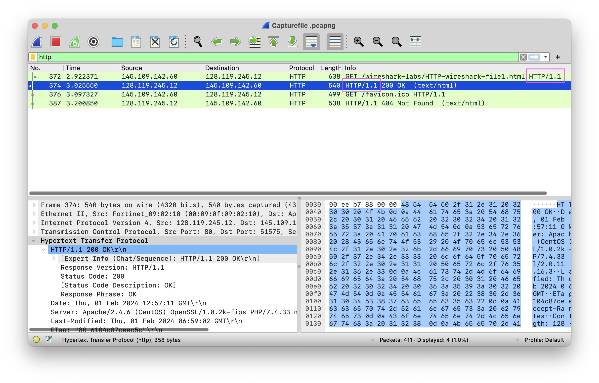
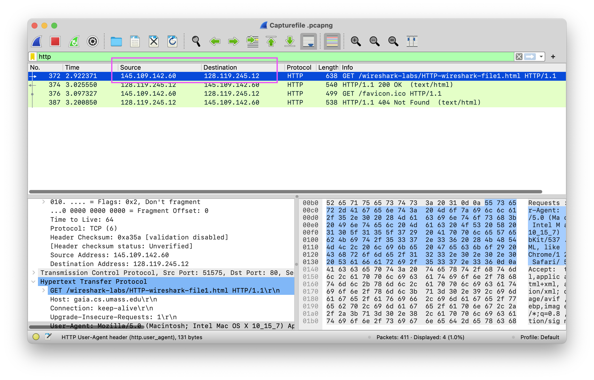

Opdrachten
Thema 1 - Toegang tot het internet
Uitleg
Verschillende internetverbindingen hebben verschillende snelheden waarmee je data kunt uploaden en downloaden. Behalve de technische eigenschappen van je verbindingen, maakt het natuurlijk ook uit welk abonnement je bij je provider hebt afgesloten. Een duurder abonnement betekend meestal hogere snelheden!
Naast de snelheid waarmee je gegevens kunt uploaden en downloaden is nog een derde getal belangrijk voor de snelheid: de ping, onder gamers ook wel bekend als de lag of latentie. Dit getal is het aantal miliseconde tussen het moment dat jij data verstuurd en het bij de ontvanger binnen komt. Een ping onder 20ms wordt beschouws als heel goed, terwijl je met een ping boven de 150ms eigenlijk niet meer goed kunt gamen.
Gemaakte opdracht
Hieronder zijn de restultaten te vinden van de testen die ik heb gedaan bij mij thuis. Er staatn twee testuitslagen. Dit is omdat mijn ouders gescheiden zijn en we in beide huizen een andere provider hebben. Het leek mij dus leuk om in beide huizen te testen wat de snelheden zijn.
Ook heb ik twee verschillende mobiele providers. Beide eb ik getest op de verschillende locaties.
| Situatie moeder | Mijn provider | Techniek | Ping | Download | Upload |
|---|---|---|---|---|---|
| HP Laptop aangesloten op Ethernetkabel | KPN | DSL | 10ms | 91 Mbps | 31 Mbps |
| MacBook via Wifi, dichtbij acces point | KPN | DSL | 11ms | 88 Mbps | 30 Mbps |
| MacBook via Wifi op de bank | KPN | DSL | 11ms | 88 Mbps | 32 Mbps |
| iPhone 13 op mobiel netwerk | Simyo | 4G | 9ms | 86 Mbps | 33 Mbps |
| iPhone 13 op mobiel netwerk | Odido | 4G | 24ms | 165 Mbps | 37 Mbps |
| Situatie vader | Mijn provider | Techniek | Ping | Download | Upload |
|---|---|---|---|---|---|
| MacBook heeft geen Ethernetaansluiting | |||||
| MacBook via Wifi, dichtbij acces point | Ziggo | Coax | 3ms | 896 Mbps | 89 Mbps |
| MacBook via Wifi op de bank | Ziggo | Coax | 12ms | 800 Mbps | 77 Mbps |
| iPhone 13 op mobiel netwerk | Simyo | 4G | 22ms | 15 Mbps | 5 Mbps | iPhone 13 op mobiel netwerk | Odido | 5G | 4ms | 544 Mbps | 88 Mbps |
Thema 2 - Internet 101 | Netwerk architectuur
Uitleg
Maak een overzicht van de verschillende netwerkapparaten in jouw eigen thuisnetwerk, en hoe deze met elkaar verbonden zijn.
Gemaakte opdracht
Thema 3 - Netwerk Applicaties
By looking at the information in the HTTP GET and response messages, answer the following questions.
- Is your browser running HTTP version 1.0 or 1.1, or newer? What version of HTTP is the server running.
- What languages (if any) does your browser indicate that it can accept to the server?
- What is the IP address of your computer? Of the gaia.cs.umass.edu server?
- What is the status code returned from the server to your browser?
- When was the HTML file that you are retrieving last modified at the server?
- Inspect the contents of the first HTTP GET request from your browser to the server. Do you see an “IF-MODIFIED-SINCE” line in the HTTP GET?
- Inspect the contents of the server response. Did the server explicitly return the contents of the file? How can you tell?
- Now inspect the contents of the second HTTP GET request from your browser to the server. Do you see an “IF-MODIFIED-SINCE:” line in the HTTP GET? If so, what information follows the “IF-MODIFIED-SINCE:” header?
- What is the HTTP status code and phrase returned from the server in response to this second HTTP GET? Did the server explicitly return the contents of the file? Explain.
- How many HTTP GET request messages did your browser send? To which Internet addresses were these GET requests sent?
- Can you tell whether your browser downloaded the two images serially, or whether they were downloaded from the two web sites in parallel? Explain.
- What is the status code returned from the server to your browser?
De versie van HTTP die mijn browser (Chrome Dev) gebruikt is 1.1. De versie van HTTP die de server gebruikt is ook 1.1.
De talen die mijn browser accepteert van de website zijn Nederlands op plek één en Engels op plek twee.
Mijn ip: 145.109.142.60
Server ip: 128.119.245.12
De status code die ik heb gekregen is 200.
1-feb-2024 om 06:59uur.
Ja deze zie ik. De datum is 1 februari 2024.
Ik denk dat de inhoud van de pagina volledig is overgenomen. In de package staat helemaal onderaan een line waaarin je de tekst kan bekijken. Als je deze uitklapt zie je de inhoud van het HTML bestand.
In de tweede HTTP GET ontbreekt de line: "IF-MODIFIED-SINCE".
Bij het tweede bestand is de statuscode anders. De code is 304. Daarachter staat dat het bestand "Not Modified" is. De inhoud van het document is ook niet meer terug te vinden onderin de capture. Dit komt omdat er niks is veranderd op de website. De bestanden van de website zijn al geladen wanneer je refresht laat de browser deze bestanden gewoon nog een keer zien aangezien er niks is veranderd.
Er zijn drie GET's gestuurd. Twee daarvan zijn gestuurd naar: "Host: gaia.cs.umass.edu\r\n. De andere is gestuurd naar: "Host: kurose.cslash.net\r\n"
Door te kijken naar de TCP port kan je zien of de bestanden in parallel of series zijn verzonden. Als er twee of meerdere verschillende TCP verbindingen zijn gebruikt spreken we over "serially downloaded". In dit geval zijn de afbeeldingen ook over twee verschillende TCP verbindingen binnen gekomen. De afbeeldingen zijn dus gedownload in series.
404 NOT FOUND
Thema 4 - DNS
Voor Thema 4 hoeven er geen opdrachten gemaakt te worden.
Thema 5 - Transportlaag
Bij Thema 5 hoeven er ook geen opdrachten gemaakt te worden.
Thema 6 - Netwerklaag
Thema 7 - Linklaag
Voor Thema 7 staan er ook geen opdrachten op de planning.
Thema 8 - Beveiliging
.